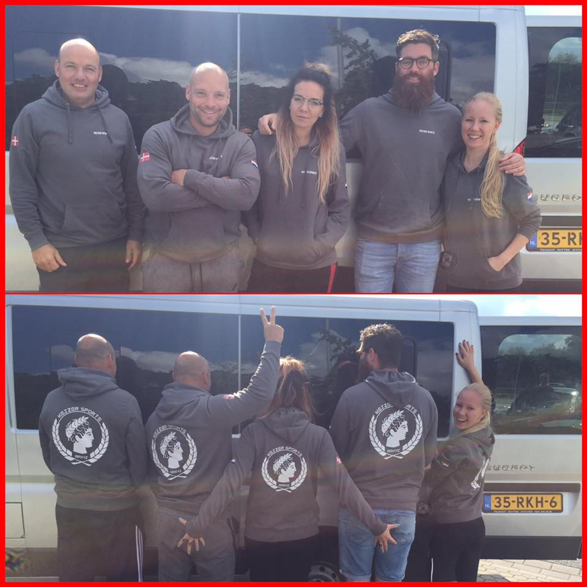

Naast de Algemene standaard voorwaarden van Keizer Sports is altijd het Nederlands wetboek geldend. We willen iedereen attenderen op:
Drinkflessen vanuit hygiënisch oogpunt worden de drinkflessen die zijn achtergebleven weggegooid als er geen naam op staat.
Kom op tijd, maar niet veel te vroeg voor aanvang van de training. Anders breng je jezelf, anderen en Keizer Sports mogelijk in problemen in verband met de corona maatregelen.
Op de mat GÉÉN schoeisel!! Gelieve deze voordat je de mat betreed uit te doen. Maak je gebruik van onze sanitaire voorzieningen? Trek je schoeisel aan zodat al het meegekomen viezigheid niet meegenomen wordt op de matten.
Gelieve géén tassen meer op de tafel te leggen. Neem zo weinig mogelijk mee, stop alles in je kluisje of leg je tas erop, en laat vooral je waardevolle spullen thuis of in de auto.
Ook wij hebben zojuist bericht over toestemming van de gemeente Beuningen gekregen om met de kinderen training buiten te gaan geven.
We zijn nu nog druk bezig voor een geschikte locatie en horen deze week welke dat wordt.
Vanaf maandag 1 juni gaan alle kids trainingen volgens de normale rooster weer van start.
Aan de hand van het weer zul je je zoon of dochter in laagjes aan moeten kleden aangezien we buiten trainen...
Wat belangrijk is om te weten.
Beste Leden/ sporters,
Zoals je wellicht uit de media heb vernomen, heeft de overkoepelende organisatie van sportverenigingen en sporten het NOC/NSF, een oproep gedaan om alle sportscholen in Nederland tot 6 april a.s. te sluiten.
Dit betekent dat wij onze deuren met onmiddellijke ingang moeten sluiten voor GROEPSLESSEN.
Een zeer betreurenswaardige situatie, maar de gezondheid en het welzijn van onze leden staat voorop en wij hebben ons dan ook aan deze maatregel, welke is afgegeven door deskundigen, te houden. Wij zullen proberen je op de hoogte te houden van nieuwe ontwikkelingen en wij lichten u zeker voor of omtrent 1 april a.s. over hoe het verder gaat.
In de hoop dat wij elkaar op de een of andere wijze kunnen blijven steunen, groet ik jullie en wens ik alleen maar een spoedig weerzien, blijf allen gezond!
Neem contact op voor vragen omtrent personal training en alle andere zaken.
Keizer Sports
Nieuw bij Keizer Sports, Body combat!
Elke vrijdag van 19:00 tot 20:00.
Dit uiterst energieke programma is geïnspireerd op vechtsportkunsten en technieken zoals Boksen, Muay Thai en Kickboksen. Op het ritme van opzwepende muziek worden oefeningen uitgevoerd die bestaan uit diverse combinaties van vechttechnieken, gericht op het verbranden van calorieën en uithoudingsvermogen.
Dit uur is een sportieve training waarbij je kracht en uithoudingsvermogen opbouwt. Deze intensieve intervaltraining is een combinatie van circuit training, bootcamp, kettlebell workout, boksen en oefeningen gericht op het stabiliseren van je lichaam en kracht.
Zij zijn zover!
Dave, Jean Paul, Carmen, Sharon en Jerry bereiden zich voor en zullen over enkele minuten van start gaan.
Met speciale dank aan de sponsors:
HSF Logistics
GSM Reparatie Shop
N&K Spedition
De vikings van Keizer Sports zijn onderweg naar Roskilde om morgen de Run van 19km te trotseren.
